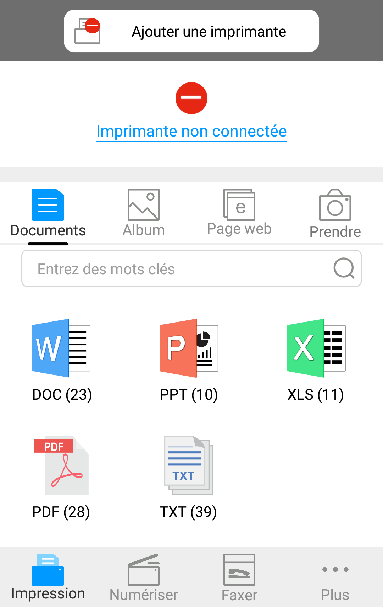

6. Impression Pantum pour mobile
6.1. Qu'est-ce que l'impression Pantum pour mobile ?
Impression Pantum pour mobile est une application gratuite qui permet aux utilisateurs d'imprimer directement des photos, des documents et des pages Web à partir d'appareils mobiles. L'impression mobile de Pantum supporte le système d'exploitation mobile Android OS 4.0-7.0 avec une résolution de 480 * 800 dpi et un écran de 3,5 " ultérieure.Elle connecte votre appareil mobile à l'imprimante par le biais de points d'accès Wi-Fi. Il vous suffit d'installer l'application Impression Pantum pour mobile pour configurer vos paramètres réseau. Elle détectera alors automatiquement les imprimantes compatibles pour l'impression, ce qui peut s'avérer très pratique et efficace.
6.2. Téléchargement de l'application Impression Pantum pour mobile
Pour télécharger l'application Impression Pantum pour mobile, rendez-vous sur le site Web Pantum officiel www.pantum.com.
6.3. Systèmes d'exploitation mobiles pris en charge
Android OS 4.4-8.0 supporté.
6.4. Comment utiliser des appareils mobiles pour l'impression mobile
6.4.1. Pour appareils Android
6.4.1.1. Travail préparatoire
1. Imprimante avec la fonction de réseau sans fil.
2. Dispositif mobile Android.
6.4.1.2. Etapes d'opération
1. Mettez l'imprimante en marche.
2. Cliquez sur l'icone "PANTUM" sur l'écran principal de l'appareil Android, l'interface apparaîtra alors comme ci-dessous.

3. Cliquez sur le bouton "Ajouter une imprimante" en haut de l'interface, puis sélectionnez la méthode en fonction de vos habitudes afin d'ajouter l'imprimante.
4. Sélectionner la fonction que vous en avez besoin, faire le réglage correspondant, pour satisfaire votre besoin de fonction.
 |
Remarque: |
• Si l'opération échoue, veuillez vérifier si l'équipement amovible Android est déjà connecté à Wi-Fi de l'imprimante. • Si l'équipement amovible Android n'a pas détecté l'imprimante, veuillez vérifier si l'imprimante est déjà connecté à l'alimentation, et si l'imprimante est déjà ouverte. • Pour plus de détails, veuillez consulter le guide d'utilisation de l'imprimante mobile ci-joint. |